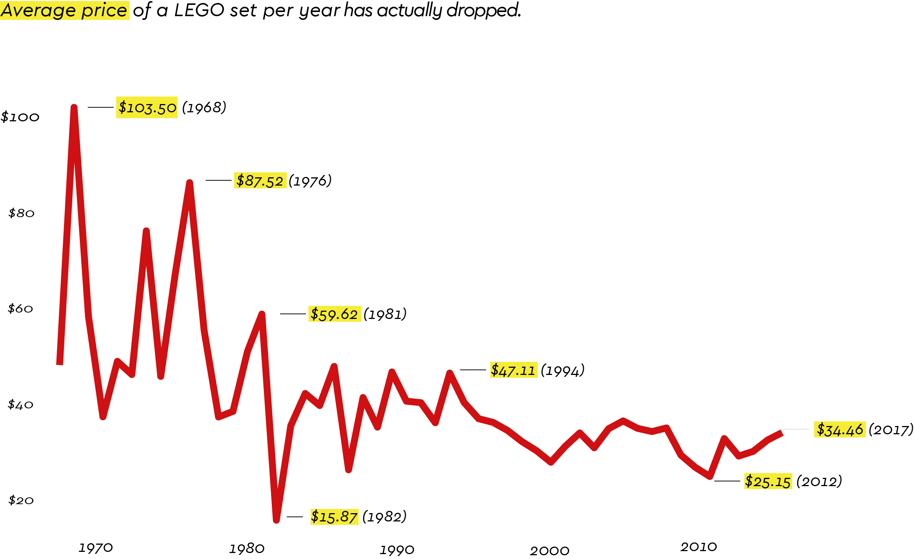
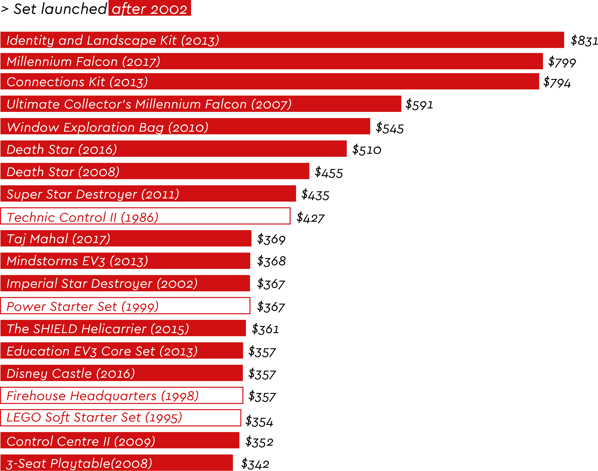
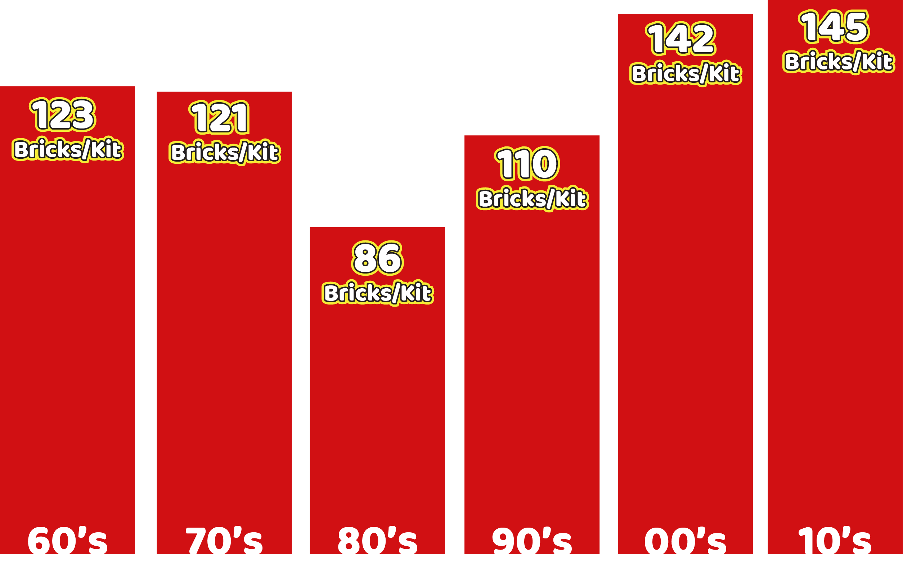
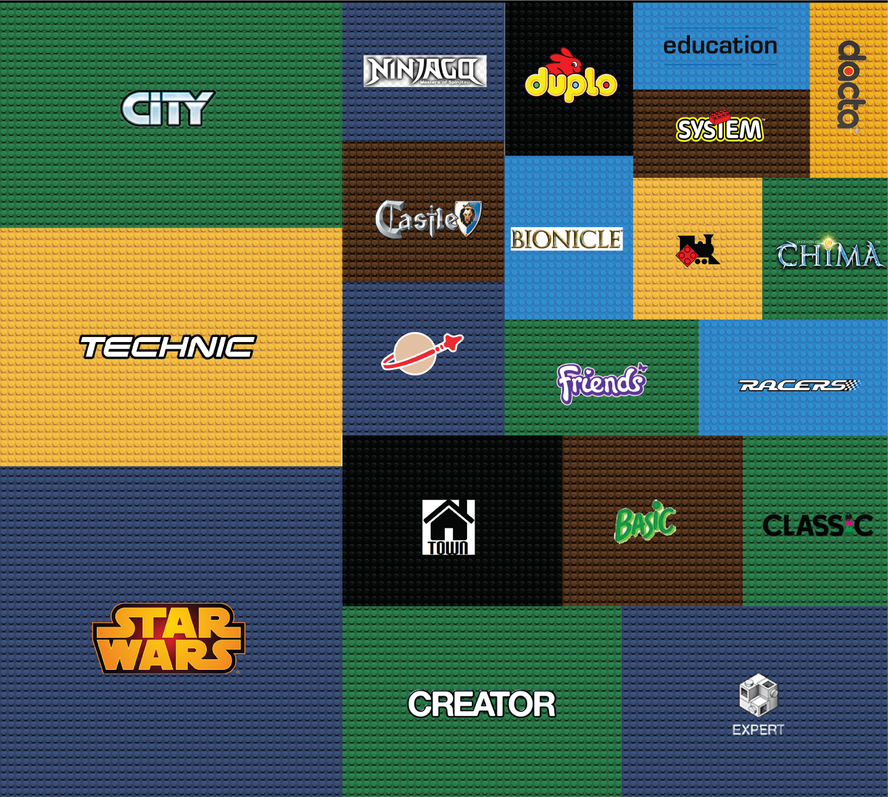

A brick by brick analysis!
Are LEGOs getting more expensive?
BY Nikos Pitsiladis
Published July 27, 2018
As there is a constant discussion that LEGOs are getting more and more expensive, we set off to find the price of the sets over the years. Most importantly, all prices have been adjusted for inflation, with the use of data from the Federal Reserve Bank of St. Louis.
60 years of data
Brickset.com is the most established, accurate and up-to-date online LEGO database today: it contains thorough information on 15089 LEGO sets and other items released over the last 69 years. We contacted them and they generously offered their complete dataset.
So are LEGOs getting more expensive?
Comparing the average price of a LEGO set from 1967 to 2017, per year.
SOURCE: Brickset.com
What if LEGO prices vary a lot per set?
Many will argue that the average price is not an accurate index, as various sets with various prices may be launched each year. Therefore, we are putting the median price to the test.

SOURCE: Brickset.com
The answer lies in the individual sets.
Although LEGOs are not getting more expensive, but quite the oposite as our analysis showed, notice how 16 out of the top 20 most expensive sets of all times have been launched after 2002.
Top 20 most expensive sets of all times
So how much would you spend on a LEGO set?

SOURCE: Brickset.com
AFOLs and new challenges
As years have passed and more that 15.000 sets have been launched, the company is obviously looking for ways to make the models more and more challenging and of course add more detail. So it comes as no surprise that LEGO sets feature more and more bricks as years pass. And then there's the AFOLs, or adult LEGO fans, who can spend and demand more and more from their favorite brand.
Cheaper and with more bricks!
Average number of bricks per set, per decade. LEGO is adding more detail to the sets as years pass.

NOTE: Data has been normalized to correctly portray the 1960's (3 years) and 2010's (7 years).
SOURCE: Brickset.com
60 years of LEGO themes.
Here are the top 30 themes in terms of bricks per set. Just imagine that more than 250.000 bricks have been included in the various Star Wars sets.

SOURCE: Brickset.com